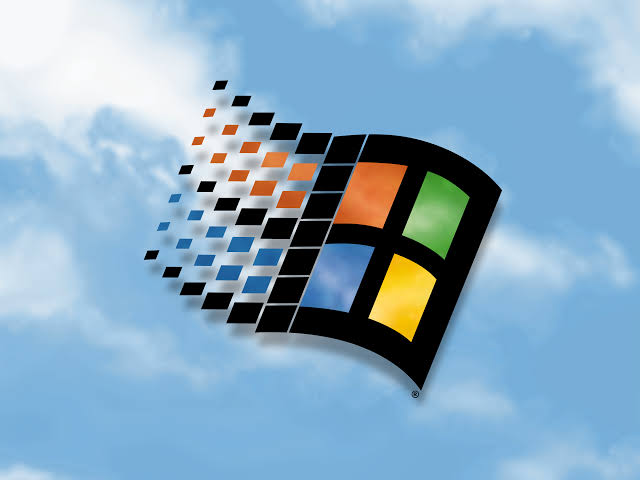

HAIII! Just a 16yo from Bulgaria.
CREATOR!!!!!!1111 of the Reverse Project

Track: Windows 98 Breakcore by Neutronium
This entire site is vibecoded. I'm a user of Artificial Intelligence (mainly because im dumb and im fascinated because we made a rock think (and because ill be learning about it at school so free grades i guess)), using it mainly to experiment with stuff and also using image generation models via Stability Matrix for shits and giggles.
Stupid TUI factory game I made for s%^ts and giggles.
Utility mod for Hypixel Skyblock.
Simulated operating system built in Python. Used to be my main thing for ~3 years.
i currently own a 18.5 inch top tube bmx and its quite hard to ride but atleast its something yk?
i currently own and ride an interbike gts 29-er with tektro HYDRAULIC!!!111 disk brakes and all shimano drive-train
gaming has been a part of my life since i was a wee lad, some of favourite games of all time are: Minecraft Missed Messages. Assetto Corsa Hacknet Balatro Pretty much all gta games except the first top down ones
i may not have many but geniunely i love them because they are there for me, thanks guys!
im pretty bad at it but atleast i can model stuff i need, and also make design concepts for balisongs (my favourite kind of knife)
im in the process of getting an fpv license so i can fly legally, current drone is the aquila 16 BUUUUUUT i will be upgrading to either a geprc t-cube 18 or a kayoumini
life is to be lived.
Discord: @bkgrnd
Made with ❤️ By bkgrnd on 10/09/2026